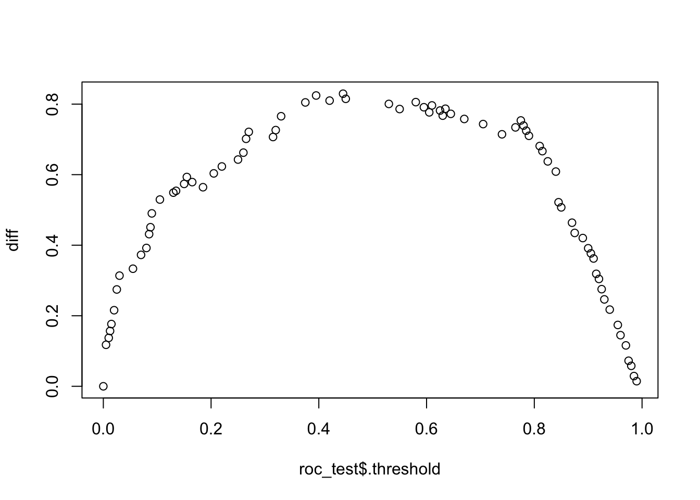
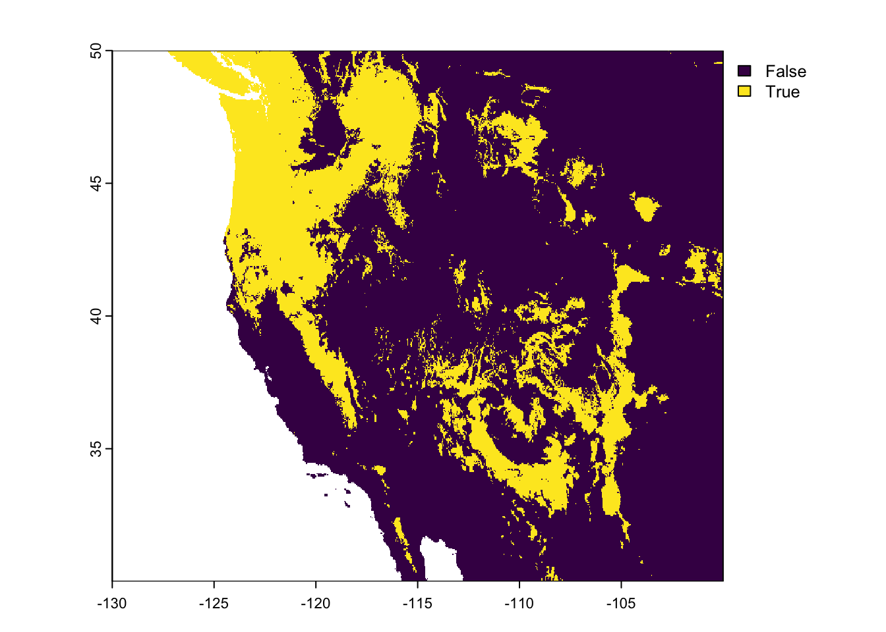

install.packages("terra")GEOG 5160 6160 Lab 03
Introduction
In this lab, we’ll look at how to implement a range of tree methods including basic classification and regression trees, random forests and boosted regression trees. We will also look at how to predict for new data and how to carry out hyperparameter tuning.
We’ll illustrate these methods by using them to build a species distribution model for the pinon pine in the western United States. You will need the following datasets from Canvas, so download these to your datafiles folder (extract any zip files). Make a new folder for today’s class called lab07 and move these files to it (you’ll need to unzip one of them):
- pe_df.csv
- ne_50m_admin_0_countries.zip
- current.env.nc
- future.env.nc
You will need to make sure the following packages are installed on your computer (in addition to the packages we have used in previous labs).
- terra: working with raster data
- sf: working with spatial data
- tmap: making thematic maps
- tree: simple classification and regression trees
- rpart.plot: better CART graphics
- vip: better variable importance plots
- pdp: partial dependency plots
As a reminder, packages can be installed in RStudio by going to the ‘Packages’ tab and clicking on the [Install] button, or from the menu [Tools]-> [Install packages…]. You can also install these from the console window by typing
Objectives
- Understand how to set use functions to train, test and examine tree-based models
- Use a validation dataset to tune model hyperparameters
- Make and visualize predictions
It is highly recommended to use scripts or Quarto documents to store your R code - this will allow you to easily change and modify it and submit the exercise.
Next load the libraries you will need for the lab. You should at this stage have most of these already installed. Add anything that is not installed using the install.packages() function.
library(tidyverse)
library(tidymodels)Warning: package 'broom' was built under R version 4.4.1library(terra)
library(sf) Warning: package 'sf' was built under R version 4.4.1library(tmap)
library(vip)
library(pdp)Warning: package 'pdp' was built under R version 4.4.1Data processing
Now, let’s read in the known locations of Pinus edulis trees together with a set of pseudo-absences (locations where the species is assumed to be absent). For each of these locations, we have one of a set of 19 bioclimatic variables that we will use as features in the model (see appendix for a description of these).
pe <- read.csv("./datafiles/pe_df.csv")
head(pe) gbifid species latitude longitude pa bio1 bio2 bio3 bio4 bio5 bio6
1 1899816923 Pinus edulis 38.86601 -104.8967 1 8.0 16.6 4.2 789.0 28.7 -10.5
2 1899815588 Pinus edulis 38.87549 -104.8832 1 6.4 16.7 4.2 778.1 27.0 -12.1
3 1899814059 Pinus edulis 38.72277 -104.8393 1 5.8 16.2 4.2 778.0 26.1 -12.4
4 1899813968 Pinus edulis 38.86471 -104.8972 1 8.0 16.6 4.2 789.0 28.7 -10.5
5 1899812645 Pinus edulis 38.90846 -104.8550 1 8.2 16.4 4.1 792.9 28.9 -10.2
6 1899777590 Pinus edulis 36.05780 -112.1357 1 7.8 16.2 4.4 721.5 27.8 -8.5
bio7 bio8 bio9 bio10 bio11 bio12 bio13 bio14 bio15 bio16 bio17 bio18 bio19
1 39.2 18.5 -1.7 18.5 -1.7 427 73 9 60 194 34 194 34
2 39.1 16.7 -3.2 16.7 -3.2 452 76 10 59 204 38 204 38
3 38.5 16.1 -3.8 16.1 -3.8 474 81 11 58 214 43 214 43
4 39.2 18.5 -1.7 18.5 -1.7 427 73 9 60 194 34 194 34
5 39.1 18.8 -1.5 18.8 -1.5 426 72 9 60 194 34 194 34
6 36.3 16.9 10.6 17.3 -0.9 411 55 14 32 133 57 115 112We’ll also make up an array of feature names for use in modeling, plotting, etc
var_names = colnames(pe)[6:24]
var_names [1] "bio1" "bio2" "bio3" "bio4" "bio5" "bio6" "bio7" "bio8" "bio9"
[10] "bio10" "bio11" "bio12" "bio13" "bio14" "bio15" "bio16" "bio17" "bio18"
[19] "bio19"And as a final processing step, we’ll convert the presence-absence column (pa) to a factor (basically forcing this to be recognized as a categorical variable).
pe <- pe |>
mutate(pa = as.factor(pa))Before moving on, we’ll convert this data frame to an sf object using st_as_sf. This requires for arguments the name of the data frame and the columns holding the coordinates. We’ll also specify the coordinate reference system using an EPSG code (WGS84 = 4326). sf objects are the standard format for spatial data in R, and allow us to make some quick maps of the presence/absence values and one of the associated environmental variables (bio7).
pe_sf = st_as_sf(pe, coords = c("longitude", "latitude"),
crs = 4326)We’ll plot the symbols using tmap. For this package, we can build up maps by specifying the sf object with tm_shape, and then the type of plot (we’ll see more of this below). First we’ll plot the sites colored by presence (1) and absence (0) which is contained in the column pa
tm_shape(pe_sf) +
tm_symbols(col="pa")And we can equally plot the eAnd let’s plot the annual temperature range (BIO7) with a continuous color palette.
tm_shape(pe_sf) +
tm_symbols(col="bio7", palette = "viridis", style = "cont")Training and testing
First, let’s set up the training and testing set using all 19 of the bioclimatic variables, first dividing into training and testing, using an 80/20 split:
pe_split <- initial_split(pe, prop = 0.80)
dat_train <- training(pe_split)
dat_test <- testing(pe_split)We’ll define a recipe to select only the bioclimatic variables for use in modeling (if you take a look at the file, you’ll see there are observation IDs and coordinates that we want to exclude).
rec <- recipe(pa ~., data = dat_train) |>
step_select(pa, starts_with("bio"))
dat_train2 = prep(rec) |> bake(dat_train)
dat_test2 = prep(rec) |> bake(dat_test)Classification and regression trees
Classification and Regression Trees (CART) are a non-linear, non-parametric modeling approach that can be used with a wide variety of data. Regression trees are used with continuous outcome data, and classification trees with binary or categorical data, but the interface for these is the same in scikit-learn. We’ll build a classification model for the Pinus edulis data set. The base function for this in tidymodels is decision_tree, which needs the type of task (classification or regression) defined. We’ll use the rpart engine to make the tree; this is the default option
tree = decision_tree(mode = "classification",
engine = "rpart")Let’s now fit this to the training data:
tree_fit <- tree |>
fit(pa ~ ., dat_train2)We can visualize the fitted tree with an additional package (rpart.plot). We can’t plot the tree_fit object directly, but we can pass it to the function extract_fit_engine, which extracts the necessary information, and then pass this to the plotting function:
library(rpart.plot)Loading required package: rpart
Attaching package: 'rpart'The following object is masked from 'package:dials':
prunetree_fit |>
extract_fit_engine() |>
rpart.plot(roundint = FALSE)We’ll now evaluate this model. First, we extract the predictions, and combine these with the pa column from the test set (i.e. the observed presence and absences)
pred_test <- predict(tree_fit, dat_test2) |>
bind_cols(dat_test2 |> dplyr::select(pa))And we can use this to make a confusion matrix:
pred_test |>
conf_mat(pa, .pred_class) Truth
Prediction 0 1
0 57 11
1 12 40And calculate the accuracy of predictions:
pred_test |>
accuracy(pa, .pred_class)# A tibble: 1 × 3
.metric .estimator .estimate
<chr> <chr> <dbl>
1 accuracy binary 0.808Tuning
Let’s try to improve on this model by tuning it to find the best set of hyperparameters to limit overfitting. You can get the list of available hyperparameters for any tidymodels model looking at the args of the original object. For a decision tree, there are three main hyperparameters:
tree$args$cost_complexity
<quosure>
expr: ^NULL
env: empty
$tree_depth
<quosure>
expr: ^NULL
env: empty
$min_n
<quosure>
expr: ^NULL
env: emptyTuning with tidymodels requries a series of steps:
- Define the tuning specification
- Define the tuning grid
- Define a strategy for validation (i.e. validating different combinations of hyperparameter values)
- Run the tuning and explore the outcomes
The goal of the tuning specification is to define which of the hyperparameters we want to tune. In tidymodels, we use the algorithm function (here: decision_tree) to set these. Here, we’ll tune the minimum number of samples to split a node (min_n) and the depth of the tree (the maximum number of splits in a single branch). Rather than set these to given value, we set them to the tune() function - essentially a placeholder to indicate that they will be tuned. In addition, we define the engine and mode of the tree.
tune_spec <-
decision_tree(
min_n = tune(),
tree_depth = tune()
) %>%
set_engine("rpart") %>%
set_mode("classification")Next, we’ll define the sampling grid. tidymodels comes with an additional package called dials that has functions to define potential values for common hyperparameters. For example, the function min_n has the following range:
min_n()Minimal Node Size (quantitative)
Range: [2, 40]And the default range for tree depth:
tree_depth()Tree Depth (quantitative)
Range: [1, 15]We’ll now use these to set up a regular sampling grid. We’ll use 5 values for each of these, giving us 5 * 5 = 25 possible hyperparameter sets:
tree_grid <- grid_regular(min_n(),
tree_depth(),
levels = 5)
tree_grid# A tibble: 25 × 2
min_n tree_depth
<int> <int>
1 2 1
2 11 1
3 21 1
4 30 1
5 40 1
6 2 4
7 11 4
8 21 4
9 30 4
10 40 4
# ℹ 15 more rowsNext we’ll set up the validation strategy. We’ll use a 5-fold cross-validation, meaning that each combination of hyperparameters will be tested 5 times. As a reminder - this will not use the testing set we created earlier so that this remains independent.
dat_folds <- vfold_cv(dat_train2, v = 5)With all that set up, we can now run the tuning. There’s a fair amount going on here, so let’s step through it. The function to run the tuning is called tune_grid, and we use the following arguments
- The tuning specification
tune_spec - A formula defining the target and features (
pa ~ ., where the.indicates using all other variables as features) - The grid of hyperparameter values to test
- The metrics to be calculated for each fold and each combination of hyperparameters
tree_res <-
tune_grid(
tune_spec,
pa ~ .,
grid = tree_grid,
resamples = dat_folds,
metrics = metric_set(accuracy, roc_auc)
)Now we can start to explore the results. In their raw form, these contain all the values in a set of columns:
tree_res# Tuning results
# 5-fold cross-validation
# A tibble: 5 × 4
splits id .metrics .notes
<list> <chr> <list> <list>
1 <split [382/96]> Fold1 <tibble [50 × 6]> <tibble [0 × 3]>
2 <split [382/96]> Fold2 <tibble [50 × 6]> <tibble [0 × 3]>
3 <split [382/96]> Fold3 <tibble [50 × 6]> <tibble [0 × 3]>
4 <split [383/95]> Fold4 <tibble [50 × 6]> <tibble [0 × 3]>
5 <split [383/95]> Fold5 <tibble [50 × 6]> <tibble [0 × 3]>But we can summarize these as follows
collect_metrics(tree_res)# A tibble: 50 × 8
tree_depth min_n .metric .estimator mean n std_err .config
<int> <int> <chr> <chr> <dbl> <int> <dbl> <chr>
1 1 2 accuracy binary 0.672 5 0.0158 Preprocessor1_Model…
2 1 2 roc_auc binary 0.659 5 0.0107 Preprocessor1_Model…
3 1 11 accuracy binary 0.672 5 0.0158 Preprocessor1_Model…
4 1 11 roc_auc binary 0.659 5 0.0107 Preprocessor1_Model…
5 1 21 accuracy binary 0.672 5 0.0158 Preprocessor1_Model…
6 1 21 roc_auc binary 0.659 5 0.0107 Preprocessor1_Model…
7 1 30 accuracy binary 0.672 5 0.0158 Preprocessor1_Model…
8 1 30 roc_auc binary 0.659 5 0.0107 Preprocessor1_Model…
9 1 40 accuracy binary 0.672 5 0.0158 Preprocessor1_Model…
10 1 40 roc_auc binary 0.659 5 0.0107 Preprocessor1_Model…
# ℹ 40 more rowsMore usefully, we can plot these to show the changes in accuracy and AUC:
autoplot(tree_res)These show that the biggest impact on performance is tree_depth, with better accuracy at depths of 4 or more. There’s is relatively less difference between the node size values, but values around 11 are probably optimal.
[Note that we could carry out a second tuning at this point with a more precise grid (e.g. between 8 and 12 for min_n) to better identify the values.]
Let’s see what came out as the optimal set of hyperparameter (the helper function select_best extracts the parameters with the highest value of a given metric):
best_param <- select_best(tree_res, metric = "accuracy")
best_param# A tibble: 1 × 3
tree_depth min_n .config
<int> <int> <chr>
1 11 2 Preprocessor1_Model16We can then use another helper function finalize_model to create a final model with these parameters, and fit to the full training set:
tree_final <- finalize_model(tune_spec, best_param)
tree_fit <- fit(tree_final, pa ~ ., dat_train2)And now, we can calculate the accuracy for this model:
pred_test <- predict(tree_fit, dat_test2) |>
bind_cols(dat_test2 |> dplyr::select(pa))
pred_test |>
accuracy(pa, .pred_class)# A tibble: 1 × 3
.metric .estimator .estimate
<chr> <chr> <dbl>
1 accuracy binary 0.8We’ll also calculate the ROC AUC. As this is not based on a confusion matrix (and associated threshold for defining 0’s and 1’s), we need to predict the probabilities not the classes. Note that for this outcome, this gives us two predictions - the probability of being a 0 and the probability of being a 1
pred_test <- predict(tree_fit, dat_test2, type='prob') |>
bind_cols(dat_test2 |> dplyr::select(pa))
pred_test# A tibble: 120 × 3
.pred_0 .pred_1 pa
<dbl> <dbl> <fct>
1 0.0959 0.904 1
2 0.0959 0.904 1
3 0.0959 0.904 1
4 0.0959 0.904 1
5 0.0959 0.904 1
6 0.0959 0.904 1
7 0.177 0.823 1
8 0.0959 0.904 1
9 0.0625 0.938 1
10 0.177 0.823 1
# ℹ 110 more rowsWe can then use this get the AUC score. Rather confusingly, this expects that the first class is the ‘event’, by default. For our data, this means that it considers the 0 as the event of interest, not the 1. To fix this, we add the argument event_level='second'.
roc_auc(pred_test, pa, .pred_1, event_level = 'second')# A tibble: 1 × 3
.metric .estimator .estimate
<chr> <chr> <dbl>
1 roc_auc binary 0.821And we get a final value of 0.8213.
We can also plot the final tree:
tree_fit %>%
extract_fit_engine() %>%
rpart.plot(roundint = FALSE)Random forest
Next, we’ll build a random forest for the Pinus data using the rad_forest function. We’ll go straight to tuning this, so let’s set up a model and check the hyperparameters. Note that the default engine is ranger - this is usually a good choice as it is designed to run in parallel with a fairly notable speed up in computation time
rf = rand_forest() |>
set_engine("ranger") |>
set_mode("classification")
rf$args$mtry
<quosure>
expr: ^NULL
env: empty
$trees
<quosure>
expr: ^NULL
env: empty
$min_n
<quosure>
expr: ^NULL
env: emptyWe’ll now set up the tuning strategy. This will follow the same steps as above, but with a difference in the hyperparameters. We’ll tune
mtry: the number of features used for split in a tree in the foresttrees: the number of trees in the forestmin_n: the minimum number of samples for splitting
Note that unlike the example above, where we used the default ranges for each hyperparameter, we manually set these while making the tuning grid using the range argument. Again, we’ll use 5 levels for each giving us \(5 \times 5 \times 5 = 125\) combinations, which will be evaluated with a 5-fold cross-validation (a total of 625 random forests)
tune_spec_rf <-
rand_forest(
mtry = tune(),
trees = tune(),
min_n = tune()
) |>
set_engine("ranger", importance="permutation") |>
set_mode("classification")
## Tuning grid (see also grid_random)
rf_grid <- grid_regular(mtry(range = c(2, 10)),
trees(range = c(100, 500)),
min_n(range = c(2, 8)),
levels = 5)
rf_grid# A tibble: 125 × 3
mtry trees min_n
<int> <int> <int>
1 2 100 2
2 4 100 2
3 6 100 2
4 8 100 2
5 10 100 2
6 2 200 2
7 4 200 2
8 6 200 2
9 8 200 2
10 10 200 2
# ℹ 115 more rowsdat_folds <- vfold_cv(dat_train2, v = 5)The following line of code will set up R to use multiple cores on your computer (you can skip this)
## Set up for parallel processing
doParallel::registerDoParallel()And finally, we can run the tuning:
## Run tuning
rf_res <-
tune_grid(
tune_spec_rf,
pa ~ .,
grid = rf_grid,
resamples = dat_folds,
metrics = metric_set(accuracy, roc_auc),
control = control_grid(save_workflow = TRUE)
)
rf_res# Tuning results
# 5-fold cross-validation
# A tibble: 5 × 4
splits id .metrics .notes
<list> <chr> <list> <list>
1 <split [382/96]> Fold1 <tibble [250 × 7]> <tibble [0 × 3]>
2 <split [382/96]> Fold2 <tibble [250 × 7]> <tibble [0 × 3]>
3 <split [382/96]> Fold3 <tibble [250 × 7]> <tibble [0 × 3]>
4 <split [383/95]> Fold4 <tibble [250 × 7]> <tibble [0 × 3]>
5 <split [383/95]> Fold5 <tibble [250 × 7]> <tibble [0 × 3]>As before, we’ll summarize the results and plot them:
collect_metrics(rf_res)# A tibble: 250 × 9
mtry trees min_n .metric .estimator mean n std_err .config
<int> <int> <int> <chr> <chr> <dbl> <int> <dbl> <chr>
1 2 100 2 accuracy binary 0.812 5 0.0101 Preprocessor1_Mode…
2 2 100 2 roc_auc binary 0.900 5 0.00688 Preprocessor1_Mode…
3 4 100 2 accuracy binary 0.793 5 0.0141 Preprocessor1_Mode…
4 4 100 2 roc_auc binary 0.892 5 0.0107 Preprocessor1_Mode…
5 6 100 2 accuracy binary 0.799 5 0.0125 Preprocessor1_Mode…
6 6 100 2 roc_auc binary 0.885 5 0.00841 Preprocessor1_Mode…
7 8 100 2 accuracy binary 0.810 5 0.00975 Preprocessor1_Mode…
8 8 100 2 roc_auc binary 0.888 5 0.00602 Preprocessor1_Mode…
9 10 100 2 accuracy binary 0.807 5 0.0138 Preprocessor1_Mode…
10 10 100 2 roc_auc binary 0.890 5 0.0104 Preprocessor1_Mode…
# ℹ 240 more rowsautoplot(rf_res)The results for accuracy are quite noisy, but there are some easier to spot trends in the AUC scores (botton panels). In general, the AUC scores are higher for small values of mtry (the x-axis) and for smaller node sizes (left panels). Let’s extract and print the best set:
best_param <- select_best(rf_res, metric = "roc_auc")
best_param# A tibble: 1 × 4
mtry trees min_n .config
<int> <int> <int> <chr>
1 2 100 2 Preprocessor1_Model001Now, let’s make a final model with these values, and evaluate with the test set:
- Accuracy
rf_final <- finalize_model(tune_spec_rf, best_param)
rf_fit <- fit(rf_final, pa ~ ., dat_train2)
pred_test <- predict(rf_fit, dat_test2) |>
bind_cols(dat_test2 |> dplyr::select(pa))
pred_test |>
accuracy(pa, .pred_class)# A tibble: 1 × 3
.metric .estimator .estimate
<chr> <chr> <dbl>
1 accuracy binary 0.9- AUC
pred_test <- predict(rf_fit, dat_test2, type='prob') |>
bind_cols(dat_test2 |> dplyr::select(pa))
pred_test |>
roc_auc(pa, .pred_1, event_level = 'second')# A tibble: 1 × 3
.metric .estimator .estimate
<chr> <chr> <dbl>
1 roc_auc binary 0.966Variable importance scores
Next we’ll plot the permutation-based variable importance for this model. As a reminder, variable importance is a measure of how much worse a model becomes when we scramble the values of one of the features. The model is used to predict the outcome for some test data (here the out-of-bag samples) twice: once with the original values of the feature and once with randomly shuffled values. If there is a large difference in the skill of the model, this feature is important in controlling the outcome.
We’ll use the add-on library vip to plot these. This does not work with the tidymodels output directly, but we can again use extract_fit_engine to get the information we need:
rf_fit_2 <- rf_fit %>%
extract_fit_engine()
library(vip)
vip(rf_fit_2)This plot shows the score for the 10 most important features (you can change this with the num_features argument). Each bar represents a single feature, and the length of the bar it’s importance. High values indicate the features that were the most useful in predicting the outcome.
Partial dependency plots
The variable importace plot tells us which features are the most important, but not how these change our predictions. We can look at the form of the relationship between the occurrence of the pine and this feature (and any other one) using a partial dependency plot. This shows changes in the outcome across the range of some feature (with all other features effectively held constant). Here, we’ll use the partial() function from the the pdp package to produce the plot. As arguments, this requires the model, the DataFrame or array used to build the model, and the feature that you want to show. This will take an array of feature, allowing you to plot several dependency plots together. We’ll start with the dependency for the most important feature (bio17; precipitation of driest quarter). Again, we need to specify which of the two possible class values is the ‘event’. We want this to be the 1’s (the presences), which is the second class (again, very confusingly)
library(pdp)
partial(rf_fit_2, "bio17", train = dat_train2,
plot = TRUE, prob = TRUE, which.class = 2)partial(rf_fit_2, "bio1", train = dat_train2,
plot = TRUE, prob = TRUE, which.class = 2)You can also plot the dependency over two features as a heatmap (not run here):
partial(rf_fit_2, c("bio1", "bio17"), train = dat_train2,
plot = TRUE, prob = TRUE, which.class = 2)Gradient boosted trees
We will now build a gradient boosted tree model for the Pinus data. In contrast to random forests that build a set of individual weak trees, boosted regression trees (BRTs) start with a single weak tree and iteratively improve on this. This is done by targeting the residuals from the previous set of models and trying to model that in the next tree. While this can make these methods very powerful, it is easy for them to overfit the data, and hyperparameter tuning becomes very important here.
With the exception of the different hyperparameters, the code follows the examples above. This is, hopefully, where using the tidymodels approach starts to shine - if you want to change algorithms, you can reuse and modify existing code easily.
- First get the hyperparameter list
gbt = boost_tree() |>
set_engine("xgboost") |>
set_mode("classification")
gbt$args$mtry
<quosure>
expr: ^NULL
env: empty
$trees
<quosure>
expr: ^NULL
env: empty
$min_n
<quosure>
expr: ^NULL
env: empty
$tree_depth
<quosure>
expr: ^NULL
env: empty
$learn_rate
<quosure>
expr: ^NULL
env: empty
$loss_reduction
<quosure>
expr: ^NULL
env: empty
$sample_size
<quosure>
expr: ^NULL
env: empty
$stop_iter
<quosure>
expr: ^NULL
env: empty- Set up tuning specification
tune_spec_gbt <-
boost_tree(
learn_rate = tune(),
trees = tune(),
min_n = tune()
) |>
set_engine("xgboost") |>
set_mode("classification")- Set up tuning grid
gbt_grid <- grid_regular(learn_rate(),
trees(range = c(200, 1000)),
min_n(range = c(2, 8)),
levels = 5)
gbt_grid# A tibble: 125 × 3
learn_rate trees min_n
<dbl> <int> <int>
1 0.0000000001 200 2
2 0.0000000178 200 2
3 0.00000316 200 2
4 0.000562 200 2
5 0.1 200 2
6 0.0000000001 400 2
7 0.0000000178 400 2
8 0.00000316 400 2
9 0.000562 400 2
10 0.1 400 2
# ℹ 115 more rows- Validation strategy
dat_folds <- vfold_cv(dat_train2, v = 5)- Run tuning
gbt_res <-
tune_grid(
tune_spec_gbt,
pa ~ .,
grid = gbt_grid,
resamples = dat_folds,
metrics = metric_set(accuracy, roc_auc),
control = control_grid(save_workflow = TRUE)
)
gbt_res# Tuning results
# 5-fold cross-validation
# A tibble: 5 × 4
splits id .metrics .notes
<list> <chr> <list> <list>
1 <split [382/96]> Fold1 <tibble [250 × 7]> <tibble [0 × 3]>
2 <split [382/96]> Fold2 <tibble [250 × 7]> <tibble [0 × 3]>
3 <split [382/96]> Fold3 <tibble [250 × 7]> <tibble [0 × 3]>
4 <split [383/95]> Fold4 <tibble [250 × 7]> <tibble [0 × 3]>
5 <split [383/95]> Fold5 <tibble [250 × 7]> <tibble [0 × 3]>- Summarize
collect_metrics(gbt_res)# A tibble: 250 × 9
trees min_n learn_rate .metric .estimator mean n std_err .config
<int> <int> <dbl> <chr> <chr> <dbl> <int> <dbl> <chr>
1 200 2 0.0000000001 accuracy binary 0.481 5 0.0258 Preprocesso…
2 200 2 0.0000000001 roc_auc binary 0.5 5 0 Preprocesso…
3 400 2 0.0000000001 accuracy binary 0.481 5 0.0258 Preprocesso…
4 400 2 0.0000000001 roc_auc binary 0.5 5 0 Preprocesso…
5 600 2 0.0000000001 accuracy binary 0.481 5 0.0258 Preprocesso…
6 600 2 0.0000000001 roc_auc binary 0.652 5 0.0214 Preprocesso…
7 800 2 0.0000000001 accuracy binary 0.481 5 0.0258 Preprocesso…
8 800 2 0.0000000001 roc_auc binary 0.713 5 0.0121 Preprocesso…
9 1000 2 0.0000000001 accuracy binary 0.600 5 0.0455 Preprocesso…
10 1000 2 0.0000000001 roc_auc binary 0.763 5 0.0192 Preprocesso…
# ℹ 240 more rows- Plot (note the impact of the learning rate)
autoplot(gbt_res)- Pick best parameters and train final model
best_param <- select_best(gbt_res, metric = "accuracy")
gbt_final <- finalize_model(tune_spec_gbt, best_param)
gbt_fit <- fit(gbt_final, pa ~ ., dat_train2)- Evaluate (accuracy)
pred_test <- predict(gbt_fit, dat_test2) |>
bind_cols(dat_test2 |> dplyr::select(pa))
pred_test |>
accuracy(pa, .pred_class)# A tibble: 1 × 3
.metric .estimator .estimate
<chr> <chr> <dbl>
1 accuracy binary 0.842- Evaluate (AUC)
pred_test <- predict(rf_fit, dat_test2, type='prob') |>
bind_cols(dat_test2 |> dplyr::select(pa))
pred_test |>
roc_auc(pa, .pred_1, event_level = 'second')# A tibble: 1 × 3
.metric .estimator .estimate
<chr> <chr> <dbl>
1 roc_auc binary 0.966Prediction
In a final step, we’ll use this model to predict the probability of Pinus edulis occurring throughout western N. America (note that this is usually referred to as predicting the suitability for the species). We’ll use the random forest model for this (but feel free to switch it for any of the other ones).
First, we’ll estimate the optimal threshold for prediction. As a reminder, the ROC curve assesses how well the model differentiates between 0’s and 1’s for different thresholds (the threshold is how a value of 0 or 1 is set from a value between 0 and 1).
The ROC curve (used to calculate the AUC) can be used to define this. First, let’s calculate this (with roc_curve) and plot it. The plot is produced using the false positive rate on the x-axis (FPR; the number of 0’s incorrectly predicted) and the true positive rate on the y-axis (TPR; the number of 1’s correctly predicted)
pred_test <- predict(rf_fit, dat_test2, type = "prob") |>
bind_cols(dat_test |> dplyr::select(pa))
roc_test <- roc_curve(pred_test, pa, .pred_0)
autoplot(roc_test)The optimal threshold is found where the TPR (sensitivity) is high and the FPR (1-specificity) is low. We can get these from the output of roc_curve
roc_test# A tibble: 79 × 3
.threshold specificity sensitivity
<dbl> <dbl> <dbl>
1 -Inf 0 1
2 0 0 1
3 0.005 0.118 1
4 0.01 0.137 1
5 0.0125 0.157 1
6 0.015 0.176 1
7 0.02 0.216 1
8 0.025 0.275 1
9 0.03 0.314 1
10 0.055 0.333 1
# ℹ 69 more rowsAnd we can find the optimum as the maximum difference between TPR and FPR, i.e. max(sensitivity - (1 - specificity))
diff = roc_test$sensitivity - (1-roc_test$specificity)
plot(roc_test$.threshold, diff)
thr = roc_test$.threshold[which.max(diff)]
thr[1] 0.445Predicting with new data
Current climate
Now we tested and tuned our models, we can use them for prediction. First, we’ll load a set of coastlines to use in plotting.
ne = st_read("./datafiles/ne_50m_admin_0_countries/ne_50m_admin_0_countries.shp", quiet=TRUE)
ne_geom = st_geometry(ne)For species distribution models, we generally want to predict the suitability for our species using a gridded dataset of the environmental variables used to build the model. The data are available in a NetCDF file called current.env.nc, which you should have downloaded. We can read this in (and work with it) using the rast function from the terra package:
curr_env = rast("./datafiles/current_env.nc")
curr_envclass : SpatRaster
dimensions : 480, 720, 19 (nrow, ncol, nlyr)
resolution : 0.04166667, 0.04166667 (x, y)
extent : -130, -100, 30, 50 (xmin, xmax, ymin, ymax)
coord. ref. : lon/lat WGS 84
source : current_env.nc
varname : BIO
names : BIO_z=1, BIO_z=2, BIO_z=3, BIO_z=4, BIO_z=5, BIO_z=6, ... There’s quite a bit there - but this is a spatial raster: 480 columns and 720 rows. There are 19 levels, corresponding to the 19 bioclimate variables we used as features in our model. Let’s plot the first level (bio1) to see what it looks like. The second and third lines of code overlay the coastline and sample points respectively.
plot(curr_env[[1]])
plot(ne_geom, add = TRUE)
plot(st_geometry(pe_sf), add = TRUE, pch = 16, cex = 0.5)
Currently, we can’t predict directly onto the grid, so as a work around, we’ll first extract all the gridded values into dataframe, then predict using that. Note we need to set the column names of the data frame to match the names of the features in the model:
curr_env_df = as.data.frame(curr_env, cells=TRUE)
colnames(curr_env_df) <- c("cell", colnames(dat_train2)[-1])
prob_df = predict(rf_fit, curr_env_df, type="prob")Now we can create a new spatial raster, by a) copying one of the inputs, and b) replacing the values with the predicted probabilities:
curr_prob = curr_env[[1]]
curr_prob[curr_env_df$cell] <- prob_df$.pred_1And finally, plot
plot(curr_prob)
plot(ne_geom, add = TRUE)
This shows that model captures the current distribution well, but also predicts a large area of suitability in the north-west (suggesting that it is climatically suitable given the variables we’ve looked at).
We can also use the threshold we calculated earlier to divide this map into a binary map of suitable and unsuitable areas:
curr_pa = curr_prob > thr
plot(curr_pa)
plot(ne_geom, add = TRUE)Future climate
The previous maps are based on current (or at least end of last century) estimates of climate. We can equally predict for other time periods when we have data available. We also have the same data for the future (2080 under a high emissions climate scenario), so let’s load that as well. We can go through the same steps to produce a map showing projected suitability for this species in 2080
future_env = rast("./datafiles/future_env.nc")
future_env_df = as.data.frame(future_env, cells=TRUE)
colnames(future_env_df) <- c("cell", colnames(dat_train2)[-1])
prob_df = predict(rf_fit, future_env_df, type="prob")
future_prob = future_env[[1]]
future_prob[future_env_df$cell] <- prob_df$.pred_1
plot(future_prob)
plot(ne_geom, add = TRUE)And again, we can threshold this to get areas of suitability/unsuitability
future_pa = future_prob > thr
plot(future_pa)
plot(ne_geom, add = TRUE)
Distribution change
As a final result, we can use the two binary maps to more easily visualize how the distribution of suitable areas is projected to change. By subtracting the current binary distribution from the future binary distribution, we end up with a map with three values:
- 1: new areas of suitability
- 0: No change
- -1: loss of suitability
plot(future_pa - curr_pa)
plot(ne_geom, add = TRUE)
Exercise
For the exercise, you will need to submit two things:
- A table listing the AUC and accuracy for the three different algorithms (decision trees, random forest and boosted regression). You should give these values based on predictions for the test dataset using the final model.
- A map showing predicted probability of Pinus edulis presence under current environmental conditions using either the decision tree model or the boosted regression
Students enrolled in 6160 should also provide
- A map showing predicted probability of Pinus edulis presence under future environmental conditions using the same model as in part 2
- A map showing the difference between the future and current predicted presence for the same model
Use a Quarto document to record your answers and output. Assignments, to include both the Quarto document and (ideally) the compiled HTML file, should be submitted to Canvas by Feb 12th. Please use the following naming convention: Lab03_lastname.
Appendix 1: Bioclimate variables
- BIO1 = Annual Mean Temperature
- BIO2 = Mean Diurnal Range (Mean of monthly (max temp - min temp))
- BIO3 = Isothermality (BIO2/BIO7) (* 100)
- BIO4 = Temperature Seasonality (standard deviation *100)
- BIO5 = Max Temperature of Warmest Month
- BIO6 = Min Temperature of Coldest Month
- BIO7 = Temperature Annual Range (BIO5-BIO6)
- BIO8 = Mean Temperature of Wettest Quarter
- BIO9 = Mean Temperature of Driest Quarter
- BIO10 = Mean Temperature of Warmest Quarter
- BIO11 = Mean Temperature of Coldest Quarter
- BIO12 = Annual Precipitation
- BIO13 = Precipitation of Wettest Month
- BIO14 = Precipitation of Driest Month
- BIO15 = Precipitation Seasonality (Coefficient of Variation)
- BIO16 = Precipitation of Wettest Quarter
- BIO17 = Precipitation of Driest Quarter
- BIO18 = Precipitation of Warmest Quarter
- BIO19 = Precipitation of Coldest Quarter